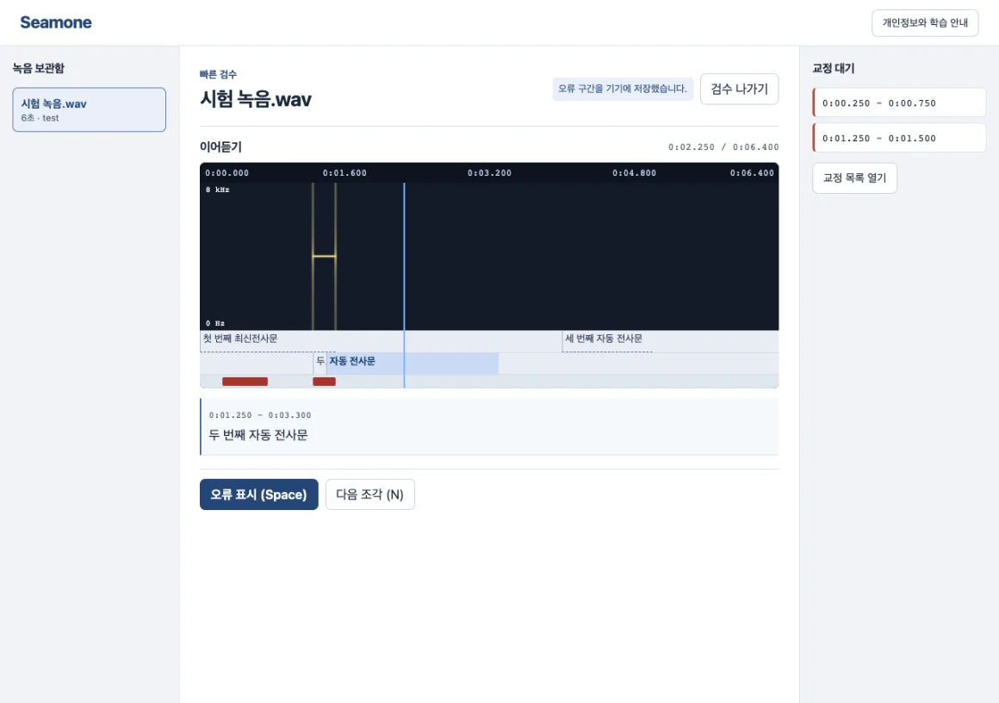

녹음부터 교정까지,
내 기기에서.
녹음하거나 파일을 열어 기기에서 음성을 받아씁니다. 음성을 다시 들으며 틀린 곳에 표시하고, 표시한 구간만 모아서 고칠 수 있습니다.
시험 빌드 보기
음성과 전사는 기기에 남습니다
현재 앱은 녹음과 전사, 수정본을 기기에 저장합니다. 사용자가 실제 발화와 일치한다고 확인한 전사만 학습 대기열에 담습니다.
향후 연합학습이 도입되면
- 기기 안에서 학습확인한 전사와 원본 음성으로 백그라운드에서 학습합니다.
- 모델 변경분 보호변경분 크기를 제한하고 노이즈를 더해 특정 녹음 내용을 추측하기 어렵게 합니다.
- 보안 집계서버는 여러 기기의 변경분을 합한 값으로 공통 모델을 갱신합니다.
기기 안 학습과 모델 변경분 전송은 준비 중입니다.
시험 빌드 받기
GitHub Actions에서 성공한 빌드를 열고 Artifacts에서 기기에 맞는 파일을 고르세요.
- macOS
- Apple Silicon·Intel용 DMG · 서명 전
- Windows
- x86-64용 EXE·MSI · 서명 전
- Linux
- x86-64용 DEB·AppImage
- Android
- 디버그 APK · 시험용
- iOS
- 시뮬레이터용 앱
기기 안 받아쓰기를 시험하려면 Whisper 엔진이 포함된 데스크톱 빌드와 Whisper small 모델 파일이 필요합니다.